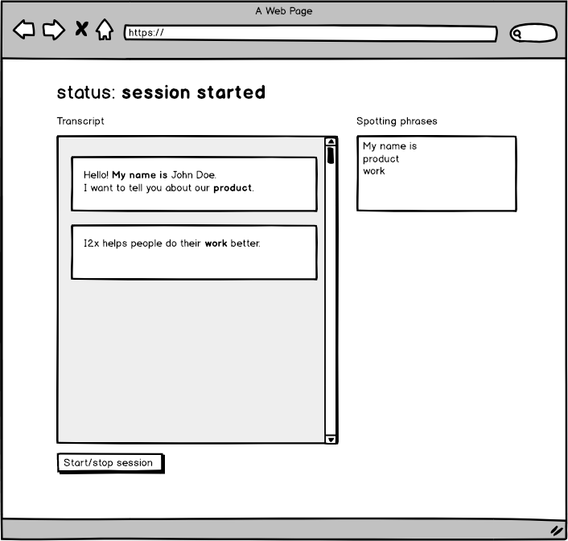

Thank you for being interested in i2x and in demonstrating your skills.
You are asked to implement an app that would process speech input and transform it to text using ASRClient library. Use current code as an example of how to use ASRClient module.
Be prepared to discuss the architectural design and implementation details of your project.
Session started or Disconnected or Error (in which case you should display the error message).Optional (but considered as a plus)

ASRClient is responsible for capturing audio input, sending data to i2x service and returning speech transcripts.
Constructor of the speech recognition client.
params endpoint - server endpoint (wss://vibe-rc.i2x.ai);
Starts the speech recognition session
params
spottingPhrases — array of phrases that should be highlighted in the sound stream
callback — function which will be called when new chunk of sound is transcribed. First argument is an error. Second argument is a result object with transcription.
result object format
{
"transcript": {
// transcripted words
"utterance": "Hello, how are you?",
// time of the phrase start from the beginning of the session
"startOffsetMsec": 420,
// time of the phrase end from the beginning of the session
"endOffsetMsec": 2730
},
// spotted words in this phrase from the `spottingPhrases`
"spotted": [
"hello"
]
}
Finishes speech recognition session
Updates the list of spotting phrases. Throws an error if session is not started.
params
spottingPhrases — array of phrases that should be highlighted in the sound stream
Returns true if session is started.